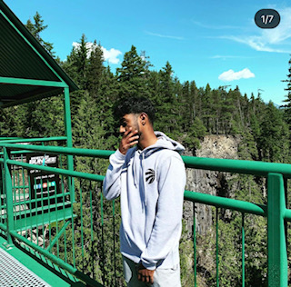

About MeCurrently a 4rd Year student at Brock University studying Interactive Arts and Science. My background in UX/UI design are very broad and there are many different skills that I have acquired that can be utilized as a benefit. My strengths include excellent communication and interpersonal skills. I also possess good problem solving and decision-making abilities. Ready to integrate into a new team I can adapt and learn fairly quickly, and as a programmer I possess many communication, analytical, and problem-solving skills that are perfect for this job. I am used to and excel in collaborative environments for both individual and teams and am self-motivated to serve in projects of all sizes. Brock University Education Here's Page 2 |  |